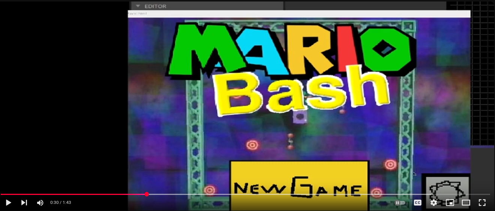
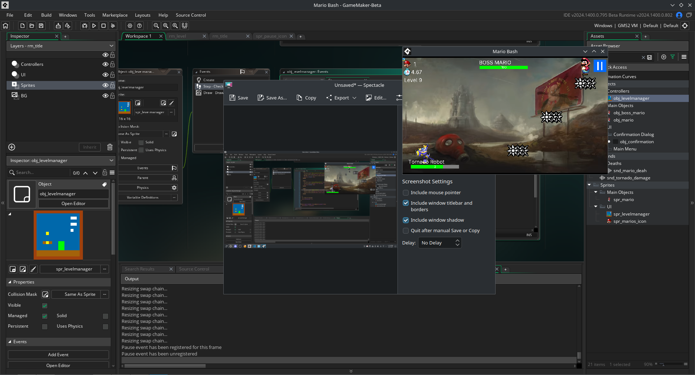
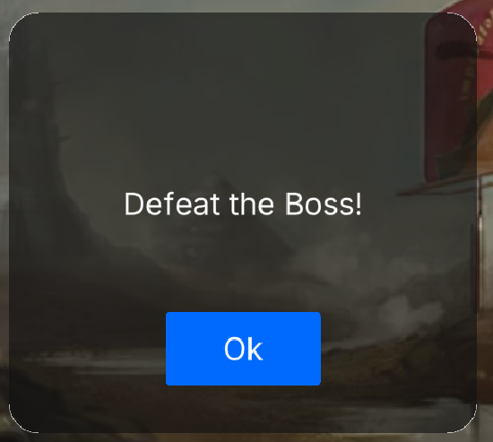
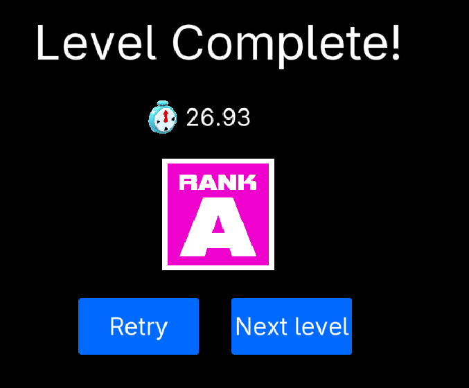

Welcome to my News!
Here you can see what happens for me right now this Page Is currently WIP theres no page system but i may implement it
May 11, 2025
Mario Bash GMS2 is finally back!
back in 2024 i supposed to finish Mario Bash The game was suffering from switching engines which kept happening back in middle 2024 the reason why i wanted to move my Fangame to Gamemaker Studio 2 is quite hard to answer
Reason why is because it was more lightweight than just making game on some random ass Game engine that runs on javascript and on a web browser literally this meant the game would run better and use less ram
Mario Bash in Construct 3 screenshot lost :(
Thus is why Construct 3 migration killed the game completely later i was documenting myself pointing it was useless and straight wanted to move my Game to Gamemaker 2 But there was one problem...
THE F#CKING SCHOOL
Thats right because of the School the development slowed down by 50% and as a solo GMS2 amateur dev this was a HUGE deal for me for sure because of it i could barely implement anything new before the deadline which was overdue unfortunately i Managed to finish half of the game but then my Smol brain asked alot of questions.
Was it worth it?
Will it ever get attention?
Why work on it?
Is it ruining my Mental health?
Thus is when i lost motivation and as of December 24 (after birthday) i had to delete the source code of the game itself
And finally the day has come.. as of March 28, 2025 i had to Pick up the Project and make it from scratch and guess what because i had genius level checker it took barely any time to actually implement some of features that dont result in being buggy
Mario Bash in GMS2 Workflow with Level 9 which is an bossbattle
The main feature of the Rewrite is that i had to make custom dialog system which doesnt use ugly gms2's look at that!
the ranking system which.. just works
And finally the level complete screen which makes sense
Anyway guess thats all i'll Talk more about my fangame later when i managed to finish it!